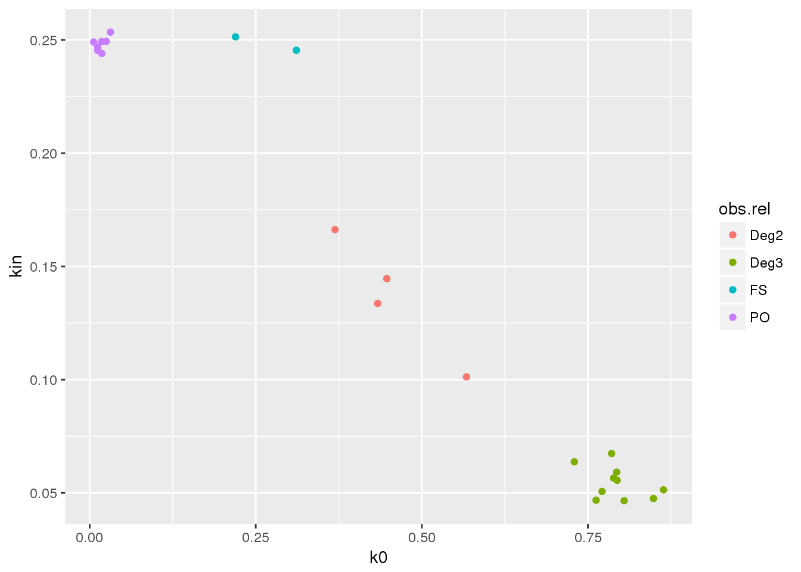

4 PC-Relate
To disentangle ancestry from recent familial relatedness, we use the PC-Relate method.
4.1 KING
Step 1 is to get initial estimates of kinship using KING, which is robust to population structure but not admixture. The KING algorithm is available in SNPRelate. Typically we select a subset of variants for this calculation with LD pruning.
# use a GDS file with all chromosomes
library(SeqArray)
data.path <- "https://github.com/smgogarten/analysis_pipeline/raw/devel/testdata"
gdsfile <- "1KG_phase3_subset.gds"
if (!file.exists(gdsfile)) download.file(file.path(data.path, gdsfile), gdsfile)
gds <- seqOpen(gdsfile)
# use a subset of 100 samples to make things run faster
workshop.path <- "https://github.com/UW-GAC/topmed_workshop_2017/raw/master"
sampfile <- "samples_subset100.RData"
if (!file.exists(sampfile)) download.file(file.path(workshop.path, sampfile), sampfile)
sample.id <- TopmedPipeline::getobj(sampfile)
# LD pruning to get variant set
library(SNPRelate)
snpset <- snpgdsLDpruning(gds, sample.id=sample.id, method="corr",
slide.max.bp=10e6, ld.threshold=sqrt(0.1))## SNV pruning based on LD:
## Excluding 1,120 SNVs on non-autosomes
## Calculating allele counts/frequencies ...
##
[..................................................] 0%, ETC: ---
[==================================================] 100%, completed
## Excluding 13,673 SNVs (monomorphic: TRUE, MAF: NaN, missing rate: NaN)
## Working space: 100 samples, 10,967 SNVs
## using 1 (CPU) core
## sliding window: 10,000,000 basepairs, Inf SNPs
## |LD| threshold: 0.316228
## method: correlation
## Chromosome 1: 31.25%, 350/1,120
## Chromosome 2: 31.61%, 354/1,120
## Chromosome 3: 30.98%, 347/1,120
## Chromosome 4: 30.98%, 347/1,120
## Chromosome 5: 29.73%, 333/1,120
## Chromosome 6: 31.16%, 349/1,120
## Chromosome 7: 28.39%, 318/1,120
## Chromosome 8: 26.07%, 292/1,120
## Chromosome 9: 28.39%, 318/1,120
## Chromosome 10: 28.30%, 317/1,120
## Chromosome 11: 26.88%, 301/1,120
## Chromosome 12: 28.39%, 318/1,120
## Chromosome 13: 25.27%, 283/1,120
## Chromosome 14: 24.29%, 272/1,120
## Chromosome 15: 22.59%, 253/1,120
## Chromosome 16: 22.41%, 251/1,120
## Chromosome 17: 22.32%, 250/1,120
## Chromosome 18: 23.66%, 265/1,120
## Chromosome 19: 21.88%, 245/1,120
## Chromosome 20: 20.80%, 233/1,120
## Chromosome 21: 17.95%, 201/1,120
## Chromosome 22: 17.32%, 194/1,120
## 6,391 markers are selected in total.sapply(snpset, length)## chr1 chr2 chr3 chr4 chr5 chr6 chr7 chr8 chr9 chr10 chr11 chr12
## 350 354 347 347 333 349 318 292 318 317 301 318
## chr13 chr14 chr15 chr16 chr17 chr18 chr19 chr20 chr21 chr22
## 283 272 253 251 250 265 245 233 201 194pruned <- unlist(snpset, use.names=FALSE)
# KING
king <- snpgdsIBDKING(gds, sample.id=sample.id, snp.id=pruned)## IBD analysis (KING method of moment) on genotypes:
## Calculating allele counts/frequencies ...
##
[..................................................] 0%, ETC: ---
[==================================================] 100%, completed
## Working space: 100 samples, 6,391 SNVs
## using 1 (CPU) core
## No family is specified, and all individuals are treated as singletons.
## Relationship inference in the presence of population stratification.
## CPU capabilities: Double-Precision SSE2
## Tue Aug 8 22:41:49 2017 (internal increment: 65536)
##
[..................................................] 0%, ETC: ---
[==================================================] 100%, completed in 0s
## Tue Aug 8 22:41:49 2017 Done.names(king)## [1] "sample.id" "snp.id" "afreq" "IBS0" "kinship"dim(king$kinship)## [1] 100 100kingMat <- king$kinship
colnames(kingMat) <- rownames(kingMat) <- king$sample.idWe extract pairwise kinship estimates and IBS0 to plot.
kinship <- snpgdsIBDSelection(king)
head(kinship)## ID1 ID2 IBS0 kinship
## 1 HG00110 HG00116 0.02534815 -0.01566265
## 2 HG00110 HG00120 0.02722579 -0.02831325
## 3 HG00110 HG00128 0.02472227 -0.01707317
## 4 HG00110 HG00136 0.03004225 -0.04909639
## 5 HG00110 HG00137 0.02675638 -0.03674699
## 6 HG00110 HG00141 0.02925990 -0.04608434library(ggplot2)
ggplot(kinship, aes(IBS0, kinship)) +
geom_hline(yintercept=2^(-seq(3,9,2)/2), linetype="dashed", color="grey") +
geom_point(alpha=0.5) +
ylab("kinship estimate") +
theme_bw()
4.2 PC-AiR
The next step is PC-AiR, in which we select a set of unrelated samples that is maximally informative about all ancestries in the sample. We use this unrelated set for Principal Component Analysis (PCA), then project the relatives onto the PCs.
First, we partition the samples into a related and unrelated set. We use a kinship threshold of degree 3 (unrelated is less than first cousins). We load the GENESIS package. In the first iteration, we use the KING estimates for both kinship (kinMat) and ancestry divergence (divMat). KING kinship estimates are negative for samples with different ancestry.
library(GENESIS)
sampset <- pcairPartition(kinMat=kingMat, kin.thresh=2^(-9/2),
divMat=kingMat, div.thresh=-2^(-9/2))
names(sampset)## [1] "rels" "unrels"sapply(sampset, length)## rels unrels
## 14 86Typically we would repeat the LD pruning step on the set of unrelated samples we just identified, but for this example we will re-use the pruned set of variants from step 1. Using the SNPRelate package, we run PCA on the unrelated set and project values for the related set.
# run PCA on unrelated set
pca.unrel <- snpgdsPCA(gds, sample.id=sampset$unrels, snp.id=pruned)## Principal Component Analysis (PCA) on genotypes:
## Calculating allele counts/frequencies ...
##
[..................................................] 0%, ETC: ---
[==================================================] 100%, completed
## Excluding 222 SNVs (monomorphic: TRUE, MAF: NaN, missing rate: NaN)
## Working space: 86 samples, 6,169 SNVs
## using 1 (CPU) core
## CPU capabilities: Double-Precision SSE2
## Tue Aug 8 22:41:52 2017 (internal increment: 8952)
##
[..................................................] 0%, ETC: ---
[==================================================] 100%, completed in 0s
## Tue Aug 8 22:41:52 2017 Begin (eigenvalues and eigenvectors)
## Tue Aug 8 22:41:52 2017 Done.# project values for relatives
snp.load <- snpgdsPCASNPLoading(pca.unrel, gdsobj=gds)## SNP loading:
## Working space: 86 samples, 6169 SNPs
## using 1 (CPU) core
## using the top 32 eigenvectors
## Tue Aug 8 22:41:52 2017 (internal increment: 65536)
##
[..................................................] 0%, ETC: ---
[==================================================] 100%, completed in 0s
## Tue Aug 8 22:41:52 2017 Done.samp.load <- snpgdsPCASampLoading(snp.load, gdsobj=gds, sample.id=sampset$rels)## Sample loading:
## Working space: 14 samples, 6169 SNPs
## using 1 (CPU) core
## using the top 32 eigenvectors
## Tue Aug 8 22:41:52 2017 (internal increment: 65536)
##
[..................................................] 0%, ETC: ---
[==================================================] 100%, completed in 0s
## Tue Aug 8 22:41:52 2017 Done.# combine unrelated and related PCs and order as in GDS file
pcs <- rbind(pca.unrel$eigenvect, samp.load$eigenvect)
rownames(pcs) <- c(pca.unrel$sample.id, samp.load$sample.id)
samp.ord <- match(sample.id, rownames(pcs))
pcs <- pcs[samp.ord,]We need to determine which PCs are ancestry informative. To do this we need population information for the 1000 Genomes samples. This information is stored in an AnnotatedDataFrame, which is a data.frame with optional metadata describing the colunms. The class is defined in the Biobase package. We load the stored object using the getobj function from the TopmedPipeline package.
library(Biobase)
sampfile <- "sample_annotation.RData"
if (!file.exists(sampfile)) download.file(file.path(workshop.path, sampfile), sampfile)
annot <- TopmedPipeline::getobj(sampfile)
annot## An object of class 'AnnotatedDataFrame'
## rowNames: 1 2 ... 2504 (1126 total)
## varLabels: sample.id subject.id ... status (6 total)
## varMetadata: labelDescriptionhead(pData(annot))## sample.id subject.id Population Population.Description sex
## 1 HG00096 HG00096 GBR British in England and Scotland M
## 2 HG00097 HG00097 GBR British in England and Scotland F
## 3 HG00099 HG00099 GBR British in England and Scotland F
## 4 HG00100 HG00100 GBR British in England and Scotland F
## 5 HG00101 HG00101 GBR British in England and Scotland M
## 6 HG00102 HG00102 GBR British in England and Scotland F
## status
## 1 0
## 2 1
## 3 0
## 4 1
## 5 0
## 6 0varMetadata(annot)## labelDescription
## sample.id sample identifier
## subject.id subject identifier
## Population population abbreviation
## Population.Description population description
## sex sex
## status simulated case/control statusWe make a parallel coordinates plot, color-coding by 1000 Genomes population. We load the dplyr package for data.frame manipulation.
pc.df <- as.data.frame(pcs)
names(pc.df) <- 1:ncol(pcs)
pc.df$sample.id <- row.names(pcs)
library(dplyr)
annot <- pData(annot) %>%
select(sample.id, Population)
pc.df <- left_join(pc.df, annot, by="sample.id")
library(GGally)
library(RColorBrewer)
pop.cols <- setNames(brewer.pal(12, "Paired"),
c("ACB", "ASW", "CEU", "GBR", "CHB", "JPT", "CLM", "MXL", "LWK", "YRI", "GIH", "PUR"))
ggparcoord(pc.df, columns=1:12, groupColumn="Population", scale="uniminmax") +
scale_color_manual(values=pop.cols) +
xlab("PC") + ylab("")
4.3 PC-Relate
The first 2 PCs separate populations, so we use them to compute kinship estimates adjusting for ancestry. The PC-Relate function expects a SeqVarData object, which allows linking sample and variant annotation with a GDS file in a single object. We will cover these in more detail later for association testing, but for now we create a bare object with no annotation.
seqResetFilter(gds, verbose=FALSE)
library(SeqVarTools)
seqData <- SeqVarData(gds)
pcrel <- pcrelate(seqData, pcMat=pcs[,1:2], training.set=sampset$unrels,
scan.include=sample.id, snp.include=pruned)
names(pcrel)## [1] "sample.id" "kinship" "ibd.probs" "nsnp" "kincorrect"
## [6] "k2correct" "call" "freq.type" "scale"PC-Relate is an iterative method. Now that we have ancestry-adjusted kinship estimates, we can use them to better adjust for ancestry in the PCs. This time we use the pcair function, which combines partitioning the sample set and running PCA in one step. First we need to make a kinship matrix from the PC-Relate results. The KING matrix is still used for ancestry divergence.
pcrelMat <- pcrelateMakeGRM(pcrel, scaleKin=1)
pca <- pcair(seqData, v=32,
kinMat=pcrelMat, kin.thresh=2^(-9/2),
divMat=kingMat, div.thresh=-2^(-9/2),
scan.include=sample.id, snp.include=pruned)
names(pca)## [1] "vectors" "values" "sum.values" "rels" "unrels"
## [6] "kin.thresh" "div.thresh" "nsamp" "nsnps" "MAF"
## [11] "call" "method"pcs <- pca$vectors
pc.df <- as.data.frame(pcs)
names(pc.df) <- paste0("PC", 1:ncol(pcs))
pc.df$sample.id <- row.names(pcs)
pc.df <- left_join(pc.df, annot, by="sample.id")
ggplot(pc.df, aes(PC1, PC2, color=Population)) + geom_point() +
scale_color_manual(values=pop.cols)
Now we use the revised PCs to compute new kinship estimates. One can run the iteration multiple times and check for conversion, but usually two rounds are sufficient.
pcrel <- pcrelate(seqData, pcMat=pcs[,1:2], training.set=pca$unrels,
scan.include=sample.id, snp.include=pruned)We plot the kinship estimates from PC-Relate, and notice that the values for less related pairs are much better behaved.
kinship <- pcrelateReadKinship(pcrel)
ggplot(kinship, aes(k0, kin)) +
geom_hline(yintercept=2^(-seq(3,9,2)/2), linetype="dashed", color="grey") +
geom_point(alpha=0.5) +
ylab("kinship estimate") +
theme_bw()
seqClose(gds)4.4 Comparison with pedigree
We can detect pedigree errors and sample identity problems by comparing the pedigree with empirical kinship estimates. We use a function from the GWASTools package, pedigreePairwiseRelatedness, to get expected pairwise relationships based on the pedigree.
pedfile <- "pedigree.RData"
if (!file.exists(pedfile)) download.file(file.path(workshop.path, pedfile), pedfile)
ped <- TopmedPipeline::getobj(pedfile)
head(ped)## family individ father mother sex
## 1 BB01 HG01879 0 0 M
## 2 BB01 HG01880 0 0 F
## 3 BB01 HG01881 HG01879 HG01880 F
## 4 BB02 HG01882 0 0 M
## 5 BB02 HG01883 0 0 F
## 6 BB02 HG01888 HG01882 HG01883 Mpw <- GWASTools::pedigreePairwiseRelatedness(ped)
names(pw)## [1] "inbred.fam" "inbred.KC" "relativeprs"rel <- pw$relativeprs
head(rel)## Individ1 Individ2 relation kinship family
## 1 HG01879 HG01880 U 0.00 BB01
## 2 HG01879 HG01881 PO 0.25 BB01
## 3 HG01880 HG01881 PO 0.25 BB01
## 4 HG01882 HG01883 U 0.00 BB02
## 5 HG01882 HG01888 PO 0.25 BB02
## 6 HG01883 HG01888 PO 0.25 BB02table(rel$relation)##
## Av FS GpGc HAv HS PO U
## 2 6 16 1 3 616 330distinct(rel, relation, kinship) %>%
arrange(-kinship)## relation kinship
## 1 PO 0.2500
## 2 FS 0.2500
## 3 HS 0.1250
## 4 GpGc 0.1250
## 5 Av 0.1250
## 6 HAv 0.0625
## 7 U 0.0000## assign degrees to expected relationship pairs
rel <- rel %>%
mutate(exp.rel=ifelse(kinship == 0.125, "Deg2", ifelse(kinship == 0.0625, "Deg3", relation)),
pair=GWASTools::pasteSorted(Individ1, Individ2)) %>%
select(pair, family, relation, exp.rel)
## assign degrees to observed relationship pairs
cut.dup <- 1/(2^(3/2))
cut.deg1 <- 1/(2^(5/2))
cut.deg2 <- 1/(2^(7/2))
cut.deg3 <- 1/(2^(9/2))
cut.k0 <- 0.1
kinship <- kinship %>%
mutate(obs.rel=ifelse(kin > cut.dup, "Dup",
ifelse(kin > cut.deg1 & k0 < cut.k0, "PO",
ifelse(kin > cut.deg1, "FS",
ifelse(kin > cut.deg2, "Deg2",
ifelse(kin > cut.deg3, "Deg3", "U"))))))
table(kinship$obs.rel)##
## Deg2 Deg3 FS PO U
## 4 10 2 7 4927# merge observed and expected relationships
kin.obs <- kinship %>%
select(ID1, ID2, kin, k0, obs.rel) %>%
mutate(pair=GWASTools::pasteSorted(ID1, ID2)) %>%
left_join(rel, by="pair") %>%
select(-pair) %>%
mutate(exp.rel=ifelse(is.na(exp.rel), "U", exp.rel)) %>%
filter(!(exp.rel == "U" & obs.rel == "U"))
table(kin.obs$exp.rel, kin.obs$obs.rel)##
## Deg2 Deg3 FS PO
## U 4 10 2 7ggplot(kin.obs, aes(k0, kin, color=obs.rel)) + geom_point()
All the observed relationships were unexpected. These samples are from 1000 Genomes sequencing, and known relatives were excluded from the released data. Here we have detected some cryptic relatives that were not annotated in the pedigree.
4.5 Exercise
Complete one round of iteration using all samples from the test dataset and plot the results. Be sure to examine the parallel coordinates plot to determine the appropriate number of PCs to give as an argument to pcrelate.